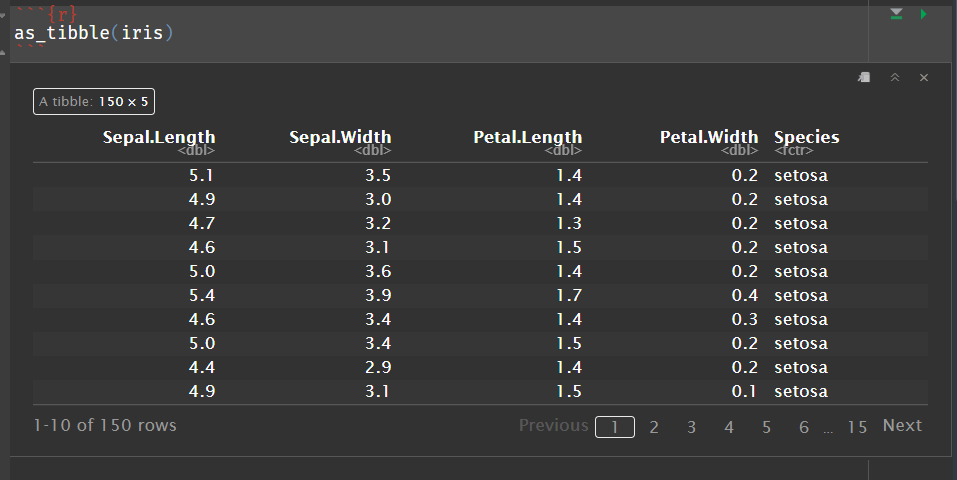

PSTAT 10 Data Science Principles
Lecture 7: Tibbles
![]()
August 22, 2026
Introduction
🔁 Review: Lecture 6
👈 Last lecture we studied the following topics:
- Real Data
- Loading Data
- Summarizing Data
- Visualizing Data
- Exploratory Data Analysis
- Quantitative vs Categorical
- Factor Data
- Histograms
👀 Outline: Lecture 7
👇 Today we will move on to looking at Tibble objects and functions from the tidyverse library, specifically:
- Issues with dataframes
- Tibble Objects
- The pipe operator
|> dplyroperators from thetidyversepackage- Reading external data

Tibble Objects
⚠️ Problems with Dataframes
We have seen that dataframes are helpful but come with some frustrating drawbacks:
- They allow numerical operations to run on non-numerical data, producing
NAvalues.
- No sequential column evaluation.
- Bad list compatibility.
Error in data.frame(x = 1:3, y = list(1:5, 1:10, 1:20)): arguments imply differing number of rows: 3, 20- Somewhat ambiguous subsetting.
🎁 Tibble Objects
The tidyverse package provides a solution in the form of tibble() objects.
First, make sure you have the tidyverse library loaded:
We can use the tibble() function to convert a dataframe into a tibble.
📌 There are lots of helpful arguments (such as .name_repair above) allowing us to modify dataframes to be easier to manipulate — look them up with ?tibble().
# A tibble: 60 × 4
Cult Date HeadWt VitC
<fct> <fct> <dbl> <int>
1 c39 d16 2.5 51
2 c39 d16 2.2 55
3 c39 d16 3.1 45
4 c39 d16 4.3 42
5 c39 d16 2.5 53
6 c39 d16 4.3 50
7 c39 d16 3.8 50
8 c39 d16 4.3 52
9 c39 d16 1.7 56
10 c39 d16 3.1 49
# ℹ 50 more rows✅ Tibble Benefits
Sequential Column Evaluation
Tibbles define columns sequentially:
Arithmetic
Tibbles do not support arithmetic across columns:
Recycling
Tibble recycling is extremely strict:
Pipe Operator
🧬 Functional Composition
We often wish to apply one function after another after another when performing computations, a process known as functional composition.
Example: Say we wish to find which (numeric) column in the iris dataset has the highest mean.
📌 Here we first used the function mean(), which lies inside apply(), which is nested inside the function which.max() to get the desired result.
🚰 The Pipe Operator
Nesting functions works fine but can quickly become very difficult to read.
The pipe operator |> allows us to chain (compose) several functions together in a clear and easy to read way. The pipe operator passes the left-hand side item as the first argument to the right-hand side function and returns the result.
🔗 Pipe Operator Chains
Start chaining functions!
This is by no means limited to being applied once!
- The pipe operator allows us to construct long chains of functions where the output of the first is fed into the second and so on.
Example: We can rewrite our previous function with pipe operators.
📌 The pipe operator is particularly helpful when we begin manipulating tibble objects using the dplyr functions in the following section.
- Note here that we typically start a new line following every pipe operator to make the code more readable.
💪 Exercise — Pipe Operator
03:00
Consider the following numerical vector:
The following nested function:
- Computes the natural log:
log(...) - Computes the difference with lag 1:
diff(..., lag = 1) - Computes the exponential:
exp(...) - Rounds the solution to the nearest 1 d.p.:
round(..., digits = 1)
Write the equivalent function using the pipe |> operator.
✅ Solution — Pipe Operator
We chain log(), diff(), exp() and round() together using the pipe operator:
📌 If we are calling a function but the pipe has already defined the first input, we still need the parentheses but leave them blank.
Tibble Manipulation
🛠️ dplyr Functions
Working with Tibbles
The dplyr functions are designed to interface easily with tibble data. The functions are loaded via the tidyverse package.
The functions are:
select()— select specific columns;filter()— filter rows based on logical conditions;mutate()— define new columns or redefine existing columns;summarise()— creates a new data frame of summary statistics of data grouped by a chosen variable; andarrange()— orders tibble rows based on a selected column.
These are often referred to as the “verbs” of dplyr because they describe the action we are taking on the data.
🎯 select() Function
The select() function allows us to choose specific columns of a tibble object using either column names or indices.
By Name
Select using column names:
🎯 select() — Deselecting & Patterns
Deselecting
Select which columns to remove:
🔍 filter() Function
The filter() function allows us to filter rows based on logical conditions satisfied by each row.
Single Condition
Return rows that have Date of either "d20" or "d21":
Multiple Conditions
Return rows with (i) Cult of "c39", (ii) Date of "d16", and (iii) HeadWt between 2.8 and 3.3:
💪 Exercise — filter() and select()
05:00
We shall use the painters dataframe from the MASS package, loaded into our environment using the following code:
- Convert the
paintersdataframe into a tibble and save it to a new object calledpainters_tib. - Use the
select()andfilter()functions and the pipe operator|>to obtain a tibble object with columns forSchool,DrawingandExpressioncontaining all painters fromSchool Awith Drawing and Expression scores above 5.
✅ Solution — filter() and select()
We convert painters to a tibble, then use select() and filter() to obtain the required columns and rows:
# A tibble: 7 × 3
School Drawing Expression
<fct> <int> <int>
1 A 16 14
2 A 13 7
3 A 16 8
4 A 16 14
5 A 17 8
6 A 16 6
7 A 18 18🧮 mutate() Function
New Columns
Take the cabbages tibble we defined earlier. If we want to add a new column named Color we can do so using the mutate() function:
New Columns from Existing
Alternatively we can define a new column using data from existing columns. For example, we can define a new column called VitCPer detailing the VitC per HeadWt.
🧮 mutate() — Changing & Removing Columns
Changing Existing Columns
mutate() can also be used to change existing columns by simply stating the name of the column you wish to change.
For example, say we discover that due to equipment failure, the HeadWt variable should actually be 1.6 times bigger for all observations.
Reading Data
📂 Reading External Data
Lots of file types!
One problem with reading data into R is that data can come in a variety of different formats and file types (some easy to use, some challenging).
R has lots of functionality for dealing with these subtleties, but most problems can be reduced by checking a few key things:
- Is the file you are trying to load in your working directory (i.e. the same directory as your R console and your Quarto document)?
- Have I written the file path of the data file correctly (spelling, file extension, etc.)?
- Did I use the correct function for the file type?
Some good practices
- Create a folder for each Quarto document you are working on.
- Create a sub-folder called
datain this folder to store all your data files. - Make sure to check your working directory and file paths before trying to load data files into R.
📁 Downloading Data Files
Data on Canvas
On Canvas you should be able to see a module named
Data.- This is where you will find the data files for this course.
For this lecture we will be using the following three files:
class.txtcustomers-100.csvSampleData.xlsx
If you are working along, save all three files to the data folder within your current working directory.
.txt Files
What are .txt Files?
A
.txtfile is a plain text file that can be opened in any text editor (e.g. Notepad, TextEdit, etc.) and contains data in a tabular format.To load
.txtfiles we use the functionread.table():
Reading .txt Files — Key Arguments
- In this case we noticed that the
.txtfile had a header, so we specifiedheader = TRUE. - We also noticed that the elements of the data were separated by spaces, so we specified
sep = " ".
.csv Files
What are .csv Files?
A
.csvfile is a comma-separated value file (similar to an Excel spreadsheet but with fewer formatting options) that stores tabular data as plain text, with commas separating each value.To load
.csvfiles we use the functionread.csv():
Index Customer.Id First.Name Last.Name
1 1 DD37Cf93aecA6Dc Sheryl Baxter
2 2 1Ef7b82A4CAAD10 Preston Lozano
3 3 6F94879bDAfE5a6 Roy Berry
4 4 5Cef8BFA16c5e3c Linda Olsen
5 5 053d585Ab6b3159 Joanna Bender
6 6 2d08FB17EE273F4 Aimee DownsReading .csv Files — Key Arguments
read.csv()assumes the file has a header row and is comma-separated by default, so unlikeread.table()we don’t need to specifyheaderorseparguments.
.xlsx Files
What are .xlsx Files?
An
.xlsxfile is an Excel spreadsheet that may contain multiple sheets of tabular data.To load
.xlsxfiles we use the functionread_excel()from thereadxlpackage:
# A tibble: 6 × 7
OrderDate Region Rep Item Units `Unit Cost` Total
<dttm> <chr> <chr> <chr> <dbl> <dbl> <dbl>
1 2021-01-06 00:00:00 East Jones Pencil 95 1.99 189.
2 2021-01-23 00:00:00 Central Kivell Binder 50 20.0 999.
3 2021-02-09 00:00:00 Central Jardine Pencil 36 4.99 180.
4 2021-02-26 00:00:00 Central Gill Pen 27 20.0 540.
5 2021-03-15 00:00:00 West Sorvino Pencil 56 2.99 167.
6 2021-04-01 00:00:00 East Jones Binder 60 4.99 299.Reading .xlsx Files — Key Arguments
- Excel workbooks can contain multiple sheets, so we specify
sheet = 2to tellread_excel()which sheet to read from.
💪 Exercise — Working with External Data
06:00
You will find on Canvas the dataset faithful.csv, which you will need for this final exercise.
- Download
faithful.csvand put it in the correct directory. - Load the data into R, storing it in an object called
faithfulusing the functionread.csv(). - Convert
faithfulto a tibble. - Create a new column called
scaledwhich contains the eruptions divided by waiting time of Old Faithful. - Display only the resulting rows corresponding to eruption duration of 5 or more.
✅ Solution — Working with External Data
We load the data, convert it to a tibble, then use mutate() and filter() to compute the scaled column and select the required rows:
Summary
✅ Topics Covered
🤔 Today we looked into:
- Tibble Objects
- Pipe Operator
- Tibble Manipulation
- Selecting
- Filtering
- Mutating
- Reading Data
.txt.csv.xlsx
📅 Next Class
🤩 Next class we will study:
- Descriptive statistics
- Base R Plotting
- Probability
- Discrete and Continuous Random Variables